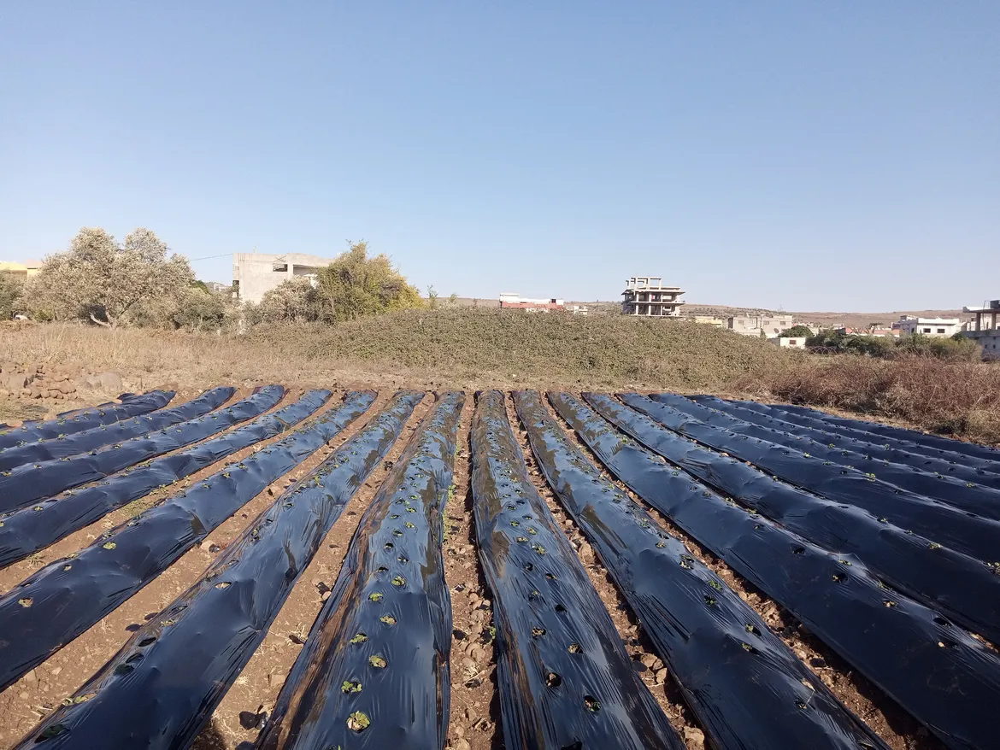
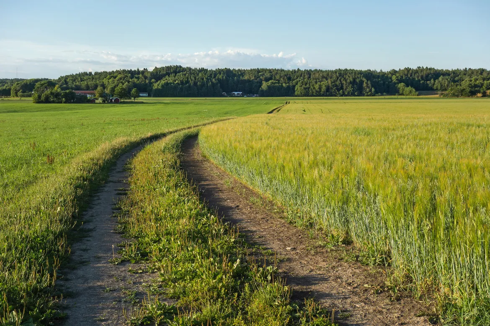
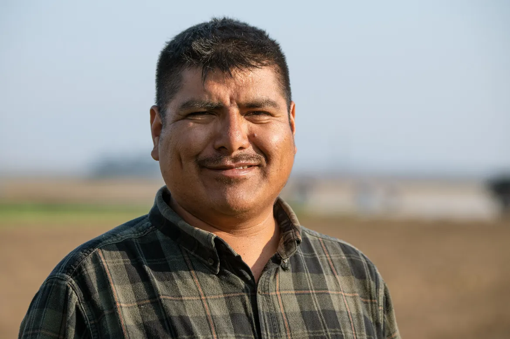
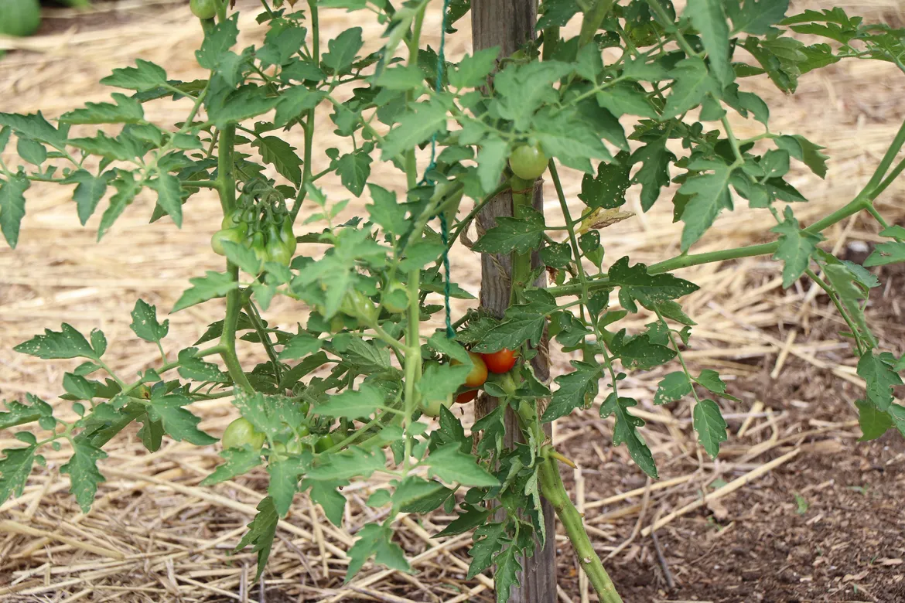
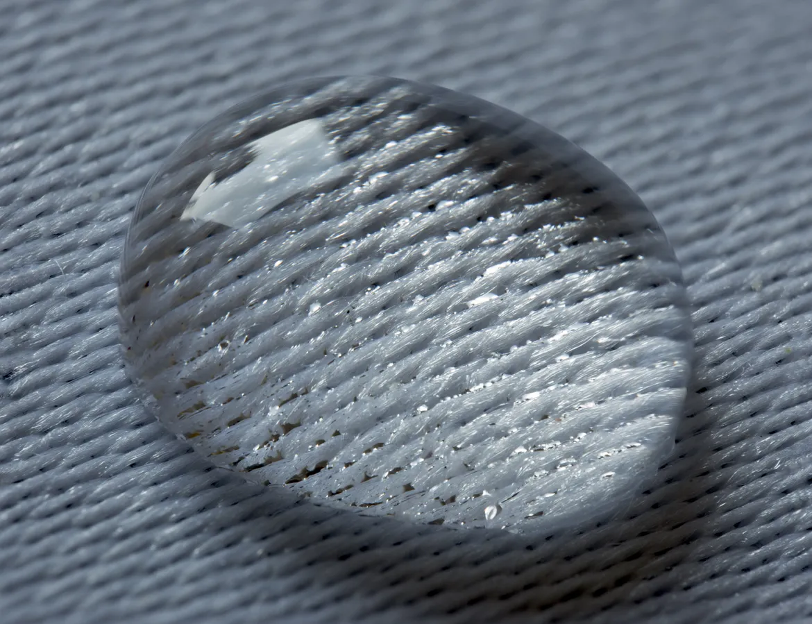

Strawberries
Pick-your-own opens mid-March. Gallon buckets, $12–$15 per gallon bucket (Sample pricing).
Family Farm · Dothan, AL
Strawberries by mid-March, sweet corn by Memorial Day, boiled peanuts in August, trees in December. Text before you drive and we will tell you what is ripe.
23 years on this sand · 4.9 (Sample rating)

Frost risk until mid-March; row covers on cold nights. Berries come in weeks ahead of most of the South.

Pick-your-own opens mid-March. Gallon buckets, $12–$15 per gallon bucket (Sample pricing).
Tender greens from the sand, cut the morning you come.

Dothan fields beat the rest of the state by a week. $6–$8 per dozen ears (Sample pricing).
Stand opens early, closes early in July heat. Watermelon, tomatoes, okra, field peas, boiled peanuts.

Vine-ripe, picked at milk stage for corn and full blush for tomatoes.

Butter beans shelled the same morning. Okra pods small enough to fry whole.
Fresh-dug green peanuts, salted right, hot by noon. $5–$10 per bag (Sample pricing).
What you buy here grew in Wiregrass sand, not at a produce terminal. Peanuts dug Tuesday are on the stand Wednesday. Strawberries picked at dawn are in the bucket by nine.
Pumpkin patch weekends, wagon rides past the peanut fields, school groups welcome with shade and restrooms ready.
October weekends. Wagon ride included. Small pumpkin for every child on a school trip.
Dug in sandy soil, cured on the barn floor. Pecans cracked or in shell.
Grass-fed beef halves and quarters, pastured pork shoulders. Call by Tuesday for Friday pickup.
Open six and a half days, stocked with whatever the Wiregrass sand gave us this week.
Price itSweet corn by Memorial Day, watermelon in July, green and boiled peanuts in August.
Price itOur berries come in by mid-March, weeks ahead of most of the South.
Price itHens on pasture under the pines, eggs on the stand by nine each morning.
Price itHalves and quarters from cattle on bahia grass, cut and wrapped in Dothan.
Price itShoulders, chops and sausage, ready for a Friday pickup when you call by Tuesday.
Price itSpring wildflower and summer jars from hives along the field road.
Price itOctober weekends with a wagon ride past the peanut fields at harvest time.
Price itLeyland cypress and Virginia pine, a saw on loan, shaken out and tied on.
Price itClasses see a peanut plant pulled up, ride the wagon and take home a pumpkin.
Price it“Every August we stop for a bag of boiled peanuts coming back from the coast. Still hot, salted right, and they will sell you green peanuts by the pound to boil at home.”Velma J., Ozark · Seasonal produce Sample review
“Took two kindergarten classes out in October. They watched a peanut plant come up out of the sand, rode the wagon, and every child carried home a small pumpkin. Shade and restrooms were ready for us.”Thaddeus M., Enterprise · Farm tours & field trips Sample review
“We cut a Virginia pine the second week of December. They lent us the saw, shook it out and tied it on the roof. The den smelled like the woods for a month.”Rosalind C., Headland · Choose-and-cut Christmas trees Sample review
“Strawberries come in earlier here than anywhere my sister lives. Picked a full gallon on the twentieth of March in short sleeves.”Odell S., Ashford · Pick-your-own strawberries Sample review
Leyland cypress and Virginia pine. Saw on loan, shaken out and tied on the roof.
If your tree drops its needles before Christmas Day, bring it back and cut another. Sample guarantee
Tell us what you need and when. We will text back before you drive.